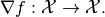

bfgs_method¶
-
odl.solvers.smooth.newton.bfgs_method(f, x, line_search=1.0, maxiter=1000, tol=1e-15, num_store=None, hessinv_estimate=None, callback=None)[source]¶ Quasi-Newton BFGS method to minimize a differentiable function.
Can use either the regular BFGS method, or the limited memory BFGS method.
Parameters: - f :
Functional Functional with
f.gradient.- x :
f.domainelement Starting point of the iteration
- line_search : float or
LineSearch, optional Strategy to choose the step length. If a float is given, uses it as a fixed step length.
- maxiter : int, optional
Maximum number of iterations.
- tol : float, optional
Tolerance that should be used for terminating the iteration.
- num_store : int, optional
Maximum number of correction factors to store. For
None, the method is the regular BFGS method. For an integer, the method becomes the Limited Memory BFGS method.- hessinv_estimate :
Operator, optional Initial estimate of the inverse of the Hessian operator. Needs to be an operator from
f.domaintof.domain. Default: Identity onf.domain- callback : callable, optional
Object executing code per iteration, e.g. plotting each iterate.
Notes
This is a general and optimized implementation of a quasi-Newton method with BFGS update for solving a general unconstrained optimization problem
for a differentiable function on a Hilbert space
 . It does so by finding a zero of the gradient
. It does so by finding a zero of the gradient
The QN method is an approximate Newton method, where the Hessian is approximated and gradually updated in each step. This implementation uses the rank-one BFGS update schema where the inverse of the Hessian is recalculated in each iteration.
The algorithm is described in [GNS2009], Section 12.3 and in the BFGS Wikipedia article
References
[GNS2009] Griva, I, Nash, S G, and Sofer, A. Linear and nonlinear optimization. Siam, 2009.
- f :